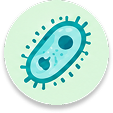

Mencocokkan Komponen
Materi 1 dari 4Pilihlah Salah Satu Jawaban Yang Benar!


Ekosistem tersusun dari makhluk hidup (biotik) dan benda tak hidup (abiotik) yang saling berinteraksi.
 Komponen Biotik
Komponen Biotik
MikroorganismeManusia Komponen Abiotik
Komponen Abiotik Cahaya MatahariAir
Cahaya MatahariAir Tanah & BatuUdara
Tanah & BatuUdaraPilihlah Salah Satu Jawaban Yang Benar!
Harap menunggu aktivitas berikutnya!
selamat mengerjakan

Coba tinjau kembali jawabanmu dan pelajari materinya dengan.
Tetap Semangat!